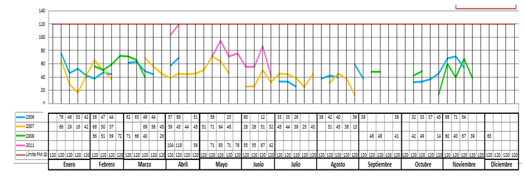

Sustentabilidad y Medio Ambiente
Coordinador, Asesor y Secretario
| Función | Nombre Completo | Institución/Empresa |
|---|---|---|
| Coordinador | Ignacio Chong López | Consejo Ciudadano del Agua |
| Asesor | Susana Montano | IMPLAN Torreón |
| Secretario | Jair Miramontes | IMPLAN Torreón |
Expertos Invitados
| Nombre Completo | Institución/Empresa |
|---|---|
| Agustín Gonzáles Grant | Director de Stratinnovac Energías Renovables |
| Catalina Arguelles del Bosque | En Defensa del Ambiente |
| Fausto Rivera Luján | TV Azteca Laguna |
| Francisco Valdés Perezgasga | ITL/Prodefensa del Nazas |
| Gerardo A. Carrillo Montañez | Colegio de Ingenieros Civiles |
| Glagys Aguirre Balza | SEMARNAT |
| Luis Fernando Montano Durán | Investigador - Académico FM UJED |
| Manuel Valencia Castro | UAdeC |
| María Del Refugio Loya | Dirección General de Medio Ambiente |
| María Susana García Veyna | Investigador - Profesor FAZ UJED/UIA |
| Sergio Raúl Gutiérrez Rocha | CMIC |
| Susana Estens | Directora General de Medio Ambiente |
| Víctor de León Hernández | SEMA |
| Virginia Camacho Armendáriz | CMIC |
Escenario tendencial a 10 años
La Zona Metropolitana de la Laguna en cuanto a sustentabilidad y medio ambiente se caracteriza por:
Una falta de manejo integral del agua que ha acentuado la escases de ésta para uso doméstico e industrial, ello redunda en mayor incidencia de enfermedades y muertes y en una baja importante de la productividad. El abatimiento de pozos de aguas y mantos acuíferos afectan las actividades productivas y pone en serio riesgo el desarrollo social y económico, hay una mayor emigración de personas y empresas.
- La población de la ZML de más de 1.2 millones de habitantes se espera que crezca entre 20% y 34% en los próximos veinte años; sin embargo, basado en la proyección de vivienda este pronóstico es de 84% de crecimiento en los mismos 20 años. Con el fin de mantener un abastecimiento apropiado de agua potable, en cantidad y calidad, se debe pensar en ahorros en dos sentidos: en el consumo directo y en la oferta del servicio por parte de los organismos operadores de los servicios de agua potable.
- De acuerdo a CONAGUA para el período 2008-2009 y 2009-2010 la superficie irrigada en la ZML fue de alrededor de las 70,000 Ha y, el volumen de agua utilizado por año, de 1050 Mm3, sin incluir el uso de agua subterránea.
Acuífero principal región Lagunera balance del agua subterránea
- Volumen concesionado Registro Público de Derechos de Agua (REPDA)
| Sector | Volumen | Porcentaje |
|---|---|---|
| Agrícola | 460 Mm3 | 60% |
| Público urbano | 145 Mm3 | 22% |
| Múltiple | 35 Mm3 | 5% |
| Industrial | 14 Mm3 | 2% |
| Otros usos | 6 Mm3 | 6% |
| Total | 660 Mm3 | 100% |
* De acuerdo a la CNA la sobreexplotación del acuífero principal es de 135%, ya que la recarga media anual es de es de 518.9 Mm3 con una extracción total de 1,221.8 Mm3/año.
* A pesar de las dificultades que enfrentan los municipios que conforman la región lagunera en el tema del agua, presentan los primeros lugares en la producción agrícola de ambos estados, en términos de toneladas producidas, sobre todo de alfalfa verde, maíz y sorgo forrajero y avena forrajera (Indicadores Estatales Agroeconómicos 2010, SIAP, SAGARPA).
* En cuanto al agua para uso urbano/público que se abastece para este sector, el 25% presentan concentraciones de arsénico por encima de la norma para el consumo humano que son 0.025mg/l.
La falta de ordenamiento ecológico que pone en riesgo la aptitud de la zona para hacer viable y sustentable la vida en ella. Las pocas áreas verdes existentes están desapareciendo comprometiendo la calidad de vida de los habitantes. Hay un marcado agotamiento de los ecosistemas que se traduce en un desabasto de recursos y una mayor brecha de inequidad ambiental.
- El crecimiento de la mancha urbana y de actividades productivas sobre el suelo agrícola y Áreas Naturales Protegidas. Degradación del suelo, Agotamiento de ecosistemas, Desabasto de recursos, Desequilibrio de actividades productivas
- Falta soporte legal e institucional: Torreón y Matamoros carecen de Programa de Ordenamiento Ecológico incumpliendo con ello la normatividad aplicable, mientras Gómez Palacio y Lerdo si cuentan con él.
El cambio climático se ha convertido en un problema ya que la presencia de temperaturas extremas y el mayor riesgo de inundaciones hacen peligrar la productividad de la zona metropolitana al aumentar los costos, especialmente en energía, para hacer posible la producción. La inconsistencia del clima dificulta además la planeación de ciclos de recarga para la agricultura.
- La Comarca Lagunera es una de las zonas más erosionadas de México.
Principales procesos de desertificación:
- El Sobrepastoreo que excede en un 400% la capacidad de carga recomendada en la zona, ocasionando la compactación del suelo por el pisoteo del ganado, misma que reduce la capacidad de infiltración del agua al subsuelo e incrementa así los escurrimientos superficiales.
- Deforestación de la Sierra Madre Occidental causada por la tala excesiva. Además de lo anterior, una helada registrada en febrero del 2011 afectó una gran masa vegetal.
En 26 años que se han registrado se observa que las temperaturas máximas tienden al aumento y las temperaturas mínimas tienden a disminuir. Ambas de manera gradual y paulatina.
Existe una mala calidad del aire que tiene un efecto adverso en la salud de los habitantes de la zona, especialmente un marcado incremento en alergias y enfermedades respiratorias. Lo anterior conlleva a un aumento importante del costo social y pérdida de competitividad de la región.
- Existe poca información disponible acerca de la contaminación del aire en la ZML y no existe continuidad de registros para poder determinar comportamientos y/o tendencias con exactitud.
- Actualmente existen dos estaciones de monitoreo de PM10 en Torreón.
Ubicación: Blvd. Revolución y Calle A S/N Col. Vencedora 
Ubicación: Av. Mayrán #190 Col. Torreón Jardín
Fuente: Dirección General del Medio Ambiente- La tendencia de las emisiones va en aumento, pues la tendencia de crecimiento de la población en la actualidad ha incrementado, al igual que algunas fuentes de emisión como son los vehículos automotores. El número de vehículos automotores registrados en 2005fueron 168,794,para 2030 se estima que se pueda duplicar este valor en un escenario donde la tasa de motorización sea del 5%. Por otro lado, el 98% (217,621 de 221,291 ton/año) de las emisiones de CO son generadas por fuentes móviles. Por lo que podríamos esperar un incremento aproximado de 1.7 a 2 veces el total de emisiones para los tres escenarios planteados donde las tasas de motorización son del 3% y 9%.
| Tasa de crecimiento anual del número de vehículos | 1994 | 2000 | 2005 | 2010 | 2020 | 2030 | Porcentaje de crecimiento 2005 - 2030 |
|---|---|---|---|---|---|---|---|
| 3% | 80692.00 | 76782.00 | 168794.00 | 208223.00 | 328005.72 | 534286.75 | 176% |
| 5% | 80692.00 | 76782.00 | 168794.00 | 208223.00 | 334374.76 | 544661.25 | 181% |
| 9% | 80692.00 | 76782.00 | 168794.00 | 208223.00 | 347112.85 | 565410.25 | 190% |
| Aumento de Emisiones CO | NA | NA | 217,621 | NA | 447522.098 | 728966.34 |
* En 2005 la generación de energía eléctrica contribuyó con el 45% de las emisiones totales de PM10, 64% PM2.5 y 79% SO2. Se considera la principal fuente contaminante de las fuentes de emisiones en todos los contaminantes criterio.
* De igual manera son pocos los estudios con evidencia científica que hablan de los efectos de la contaminación atmosférica en la salud de los habitantes de esta zona metropolitana. Sin embargo, deben considerarse seriamente los impactos ocasionados por la polución atmosférica en el diseño de políticas públicas dirigidas a mejorar la calidad de vida de la población y del ecosistema a largo plazo. Así pues, es necesario tomar en cuenta el factor de incremento de la tasa de morbilidad y mortalidad que representa esta problemática en las zonas urbanas.
* De acuerdo al PROAIRE 2011-1020 de la ZMVM y PROAIRE 2010 -2015, los grupos vulnerables son los niños menores de 5 años de edad y adultos mayores de 65. La exposición a los contaminantes criterio tienen gran impacto principalmente en los indicadores de ingresos hospitalarios por tos, bronquitis, neumonía y enfermedades cardiovasculares y en un aumento de la tasa de mortalidad por complicaciones respiratorias.
* Los contaminantes que tienen mayor impacto en la salud son las PM10 y PM2.5, y potencializan su toxicidad cuando se conjunta con el O3.
La falta de manejo integral de residuos contribuye a una mayor contaminación del suelo, aire y de los mantos acuíferos lo que afecta significativamente la salud de los habitantes y genera una mala imagen de la zona deteriorando el entorno y haciéndolo poco habitable.
- De los municipios que conforman la zona metropolitana de la Laguna solo Torreón cuenta con un sitio para depositar los desechos de la construcción (cañón del Indio) que en últimas fechas ha incrementado en un 100% el depósito de escombro y se reciben un promedio de 600 toneladas diarias de los cuales el 85% provienen de las grandes empresas constructoras de la región.
- En cuanto a la generación de basura Torreón y Gómez generan en promedio un total de 168,493 y 145,635 toneladas al año respectivamente, mientras que Matamoros genera en promedio 41,365 toneladas.
- El reciclaje de residuos en la región es muy bajo por cada 100 kilogramos solo se reciclan 3.
Problemas a atender en orden de importancia:
| Problema a atender | Promedio |
|---|---|
| Falta del manejo integral del agua | 4.8 |
| Cambio climático problemático | 2.9 |
| Mala calidad del aire | 2.8 |
| Falta de ordenamiento ecológico | 2.7 |
| Falta de manejo integral de residuos | 1.7 |
Visión 2040
La zona metropolitana de La Laguna en cuanto a Sustentabilidad y Medio Ambiente se caracteriza porque:
- Tiene un Manejo Integral del Agua con un modelo de producción acorde al ecosistema de la zona, una integración de los sistemas municipales de agua y un organismo mixto ciudadano corresponsable del manejo. Existe y se hace cumplir una normatividad adecuada que se orienta a lograr un manejo sustentable y eco-sistémico del agua de forma que se garantice la calidad y cantidad de agua para todos los habitantes y sectores productivos además del equilibrio acuífero
- Atiende oportunamente los Efectos del Cambio Climático a través de diversas estrategias como el cuidado y ampliación de las áreas verdes urbanas en la zona metropolitana, el fomento a una cultura de concientización de impacto ambiental, inversión de recursos para un manejo óptimo de las áreas naturales protegidas, la regulación integral de las industrias y emisiones de automotores y producción pecuaria, el uso y aprovechamiento de energías alternas, la implementación de incentivos económicos a empresas, transporte y áreas verdes privadas, trasporte público eficiente y un impulso al uso de bio-combustibles. Todas las estrategias están derivadas de un programa metropolitano de cambio climático con estrategias de mitigación y adaptación claras
- Existe una Buena Calidad del Aire producto de la ejecución del programa pro-aire de la Comarca Lagunera y la regulación de emisiones contaminantes a través de medios como la verificación de emisiones de industria y transporte. Además del impulso a la movilidad sustentable y el cuidado y ampliación de las áreas verdes en la zona. Se creó el Instituto Lagunero de la Calidad del Aire
- Se cuenta con un Ordenamiento Ecológico hecho operativo a través de un plan e instrumentos metropolitanos que están integrados en la planeación urbana. Hay un plan metro de áreas verdes, la cultura de reciclaje va permeando a la sociedad ello se evidencia en ciudadanos, funcionarios y empresarios comprometidos con una cultura verde. El desarrollo de fraccionamientos urbanos considera en su diseño la inclusión de plantas de tratamiento de agua y residuos. Se aplica efectivamente el ordenamiento territorial con criterio eco-sistémico considerando entre otras cosas el acortamiento de distancias de traslado y el resguardo de las áreas naturales protegidas
- Hay un Manejo Integral de Residuos. Se ha instaurado la cultura del reciclaje, re-utilización y reducción de desechos por lo cual se han instalado plantas tratadoras de residuos en todas las ciudades de la zona metropolitana, las empresas se declaran verdes y se hacen responsables de la disposición de sus residuos. Existe en la metrópoli un programa de manejo de residuos de basura cero que contempla la separación desde su origen y hay regulación al respecto que se cumple oportunamente
Bienvenida
Hora de inicio: 09:12 a.m.
Introducción
El Arq. Rafael Pérez Fernández expone los objetivos del Plan Estratégico Metropolitano.
Introducción por Lic. Rodrigo González Morales: Explicación de los resultados de la mesa anterior, presentación de los indicadores y futuros tendenciales de cada uno de los problemas de cada temática.
El Arq. Rafael Pérez explica la mecánica del evento. Que en la elección de futuro deseable se llenará un formato de manera individual; luego se realizarán rondas para enriquecer de 15 minutos tomando nota de forma conjunta e interactiva. Al final se hará la integración y propuestas de objetivos y metas.
Visión – Futuro Deseable
Problema 1. Falta de manejo integral del agua
- Inteligente racionalización de agua por sector diagnóstico.
- Tener una normatividad que limite actividades productivas, mecanismos legales que se pague por los daños ocasionados y técnicos. Tener la integración de expertos.
- Lograr un manejo sustentable y ecosistémico del agua.
- Programa que equilibre el acuífero y tenga resuelto el problema de la calidad del agua. Con un modelo de producción más acorde al ecosistema en el que vivimos.
- Operación de presas.
- Calidad y cantidad suficientes para todos los sectores, disponibilidad.
- Rio vivo.
- Cultura de uso y reuso de aguas tratadas, plantas tratadoras por sector.
- Recuperación de agua de lluvias.
- Integración de sistemas municipales de agua de la zona metropolitana.
Problema 2. Cambio climático problemático
- Evidente reducción de gases de efecto invernadero.
- Capacidades de recuperación para enfrentar el cambio climático.
- Ámplias áreas verdes urbanas en zona metropolitana, en aeropuerto y en la vega de caracol.
- ZML cultura de conscientización de impacto ambiental individual y colectiva.
- Áreas naturales protegidas con buen financiamiento y manejo.
- Regulación integral a las industrias, emisiones de automotores, producción pecuaria y aprovechamiento de energía.
- Programa metropolitano de cambio climático con estrategias de mitigación y adaptación claras.
- Transporte eficiente.
- Prevenir uso de agua para procesos de gas shale.
- Cero riesgo de arsénico.
Problema 3. Mala calidad del aire
- Ejecutar programa Proaire Comarca Lagunera.
- Regulación de emisiones contaminantes criterio, gases y polvos que cumplan con estándares internacionales. Verificación de emisiones a industrias y transporte.
- Incluir e incentivar un transporte eficiente, accesible y cómodo, alternativas ciclistas (movilidad sustentable). ZML con 600 km de ciclocarril.
- Monitoreo en ZML para conocer calidad del aire y tomar acciones concretas. Datos suficientes y en tiempo real. Con resultados efectivos en la calidad del aire.
- El que contamina paga.
- Con 5 espacios de grandes áreas verdes.
Problema 4. Falta de ordenamiento ecológico
- Hay un plan/instrumento metropolitano de desarrollo de acuerdo al ordenamiento ecológico participativo integrado a mecanismos de planeación urbana.
- Hay un plan metro de áreas verdes.
- No hay desperdicios, todo se recicla.
- Ciudadanos y empresarios comprometidos con respecto al medio ambiente y cultura verde. Contamos con agenda local verde, de ordenamiento que marque criterios específicos de usos de suelo y concepto de áreas verdes.
- Ciudad o región donde se respete y privilegie el aspecto urbano natural y ecológico.
- Aplicación efectiva de ordenamiento territorial con criterio ecosistémico.
Problema 5. Falta de manejo integral de residuos
- Cada empresa es responsable de la disposición de residuos.
- La ZML tiene cultura de aprovechamiento de reciclaje 100% de reuso y reducción de desechos, aprovechamiento de residuos mayor al 95%.
- Plantas tratadoras de residuos.
- Empresas verdes y eficientes.
- Región con programa de manejo de residuos de basura cero que contemple la separación desde su origen.
- ZML con residuos mínimos, manejados y dispuestos adecuadamente.
- Cero contaminación y desechos.
- Sin bolsas de plástico, botellas de agua y sin unicel.
- Contamos con un directorio de todas las empresas y los desechos que genera.
- Separación de basura en hogares y empresas recolectoras de basura.
Propuesta de objetivos y metas
Se integraron las visiones y se agregaron a las que ya se tenían por parte de la mesa. Se llenaron los formatos.
Conclusión
- Mejoró la dinámica y gustó más. Fue más participativa y mejoró mucho el acomodo de la mesa y las divisiones.
- Se va con el compromiso de checar los puntos con detalle y trabajar para ver de que manera se puede llevar a cabo las propuestas.
- Se va con esperanza y la forma de hacer participativa e institucional para hacer esto tiene muchas oportunidades. Una experiencia agradable y esperanzadora.
- Rodrigo presenta de forma integral, le gusto mucho, aunq sea en pocos temas debemos hacer propuesta. Se va con compromiso
- Inquietud de que no se asegura la sobrevivencia del IMPLAN después de la administración. Promoción de bicicleta y del uso sust de agua y de las ANPS.
- Resalta el interés y esperanza que salga un buen documento y que se implemente para a 25 años ver los frutos compromiso de apoyar y brindar información.
- El alcalde quiere que se sigan lineamientos del IMPLAN.
- Para que funcione 3 componentes: voluntad política, participación ciudadana y educación.
- Preocupante que no trascienda periodos administrativos porque la planeación esta teniendo cara en Torreón y la no integración metro es preocupante.
- Lo que queremos es tener un mundo mejor, el consumismo de recursos naturales va a impedir que alimentemos a la sociedad.
- Bueno tener sinergia entre dependencias y es mas importante integración de todos nosotros.
- Es mas grande y ve muchas posiblilidades de continuar.
- Esta involucrando a mucha gente y podremos trascender.
- Es un ejercicio mas, la expectativa seria que se aplicara en la medida de lo posible, depende de nosotros ciudadanos que se convierta en plan de estado.
- Llevarnos la idea de como generar como un observatorio que características para dar seguimiento
- La contraloría social es un observatorio, o exigir al gob que se ponga las pilas y que apoye.
- Agradece a todos y la preocupacipon es que podamos discutir cualquier tema de manera profesional.
Agradecimiento y despedida
Hora de término: 01:25 p.m.


{kind=link}
{kind=link}
{kind=link}
{kind=link}
{kind=link}
{kind=link}
{kind=link}
{kind=link}
{kind=link}